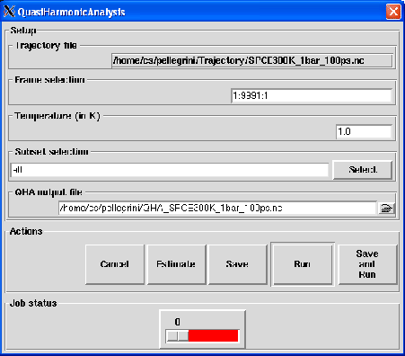

Next: Output
Up: Quasi Harmonic Analysis
Previous: Theory and implementation
Contents
Parameters
Pressing the Quasi-Harmonic analysis button will pop up the dialog shown on figure 4.46
Figure 4.46:
The dialog from where the QHA analysis will be set up and run.
|

|
The following input fields controls the parameters for the QHA analysis:
- Trajectory file
Format: string
Default: traj_file where traj_file is the name of the loaded trajectory
Description: the value of this widget can not be changed. It just recalls for information purpose the name
of the trajectory file loaded for the analysis.
- Frame selection
Format: string
Default: 1:traj_length:1 where traj_length is the number of frames of the trajectory.
Description: this widget allows to select the trajectory frames that will be used for the analysis. This must
be a string of the form:
first:last:step
where first is an integer specifying the first frame number to consider, last is an integer specifying the last
frame number to consider and step is an integer specifying the step number between two frames.
For example,
- 2:10:3 will select the frames 2, 5 and 8.
- 1:5:1 will select the frames 1, 2, 3, 4 and 5.
- Temperature (in K)
Format: strictly positive float
Default: 1.0
Description: this widget allows to define the temperature factor defined in equation 4.104.
- Subset selection
Format: subset selection string
Default: all
Description: this widget allows the selection of a subset of the system for the analysis.
See Section 4.2.2.1 for more details.
- QHA Output file
Format: string
Default: QHA_traj_file.nc where traj_file.nc is the name of the input trajectory
Description: this widget allows to enter the name of the NetCDF output file of the QHA analysis.
Next: Output
Up: Quasi Harmonic Analysis
Previous: Theory and implementation
Contents
pellegrini eric
2009-10-06